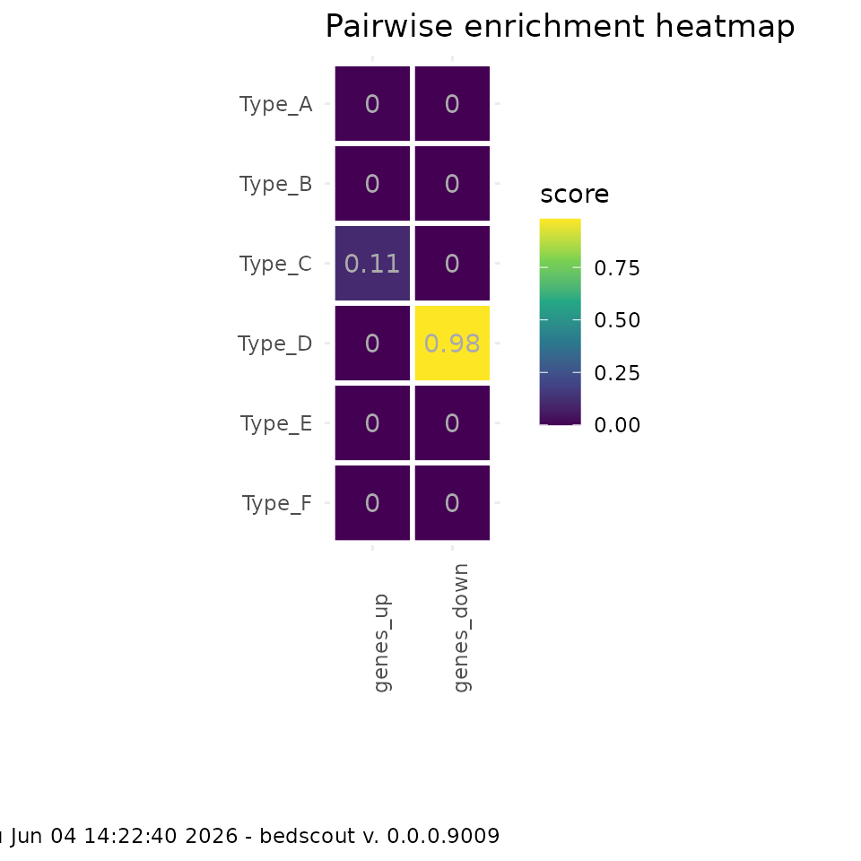
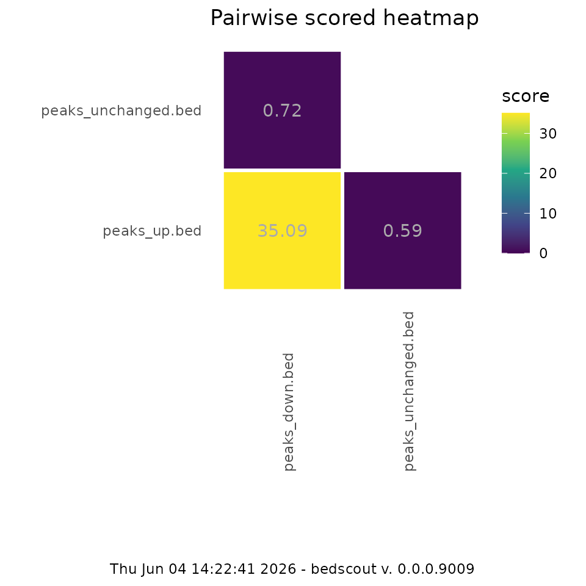
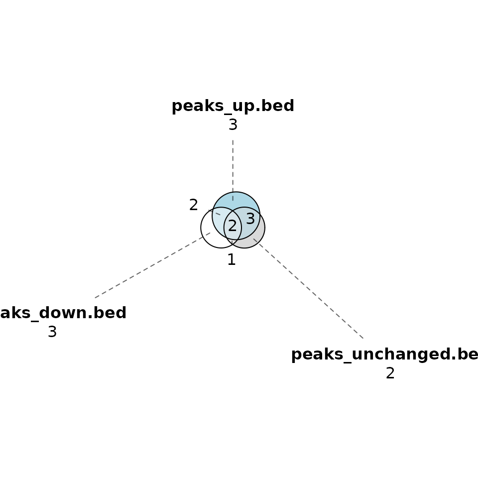
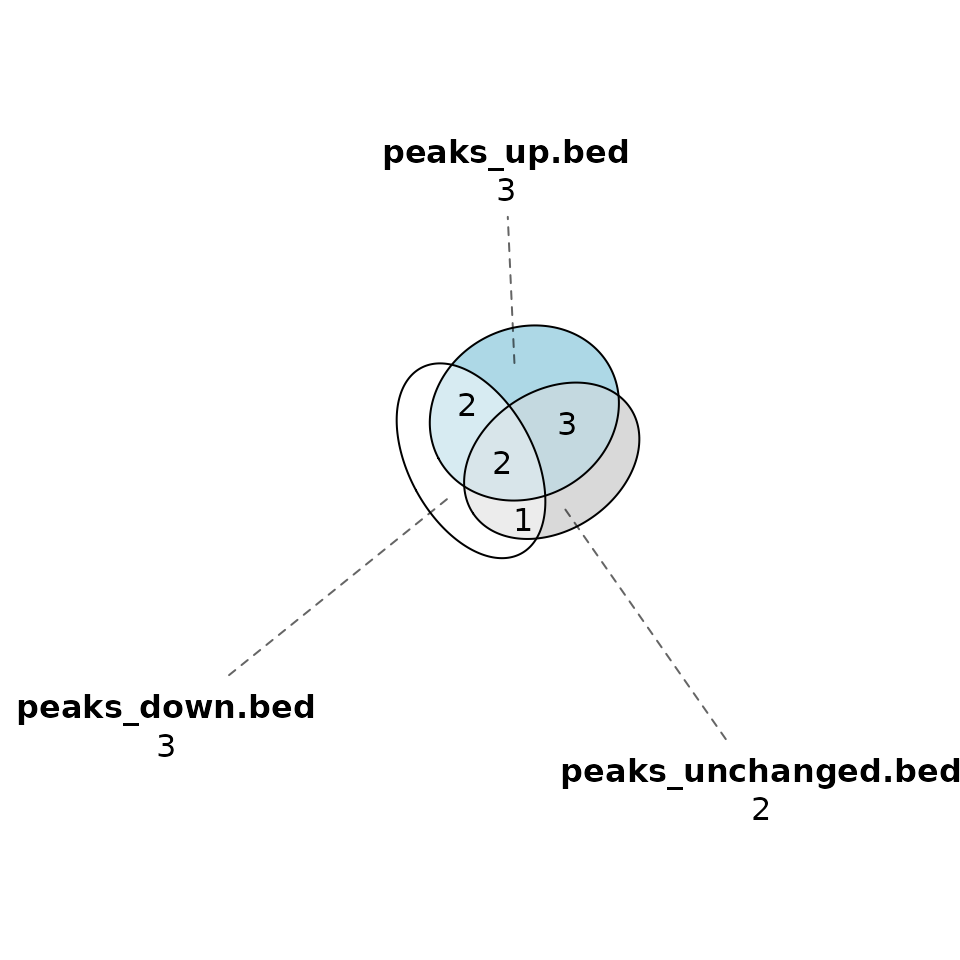

bedscout
bedscout.RmdLoci enrichment analysis with bedscout
bedscout is a library that wraps some useful
functionality around BED file annotations mostly in the
shape of GRanges objects. Currently implemented functions
belong to one of the following categories:
Arithmetic: Overlap-related simple operations that can be performed between two or more
GRangesobjects, currently:loci_overlap,bp_overlap,fc_enrichmentandjaccard_index,loci_consensus.Pairwise: Scoring functions to compare lists of
GRangesin a pairwise all-to-all kind of manner. For these,pairwise_scorecomputes any arbitrary score function (anything that takes twoGRangesobjects as inputs), including the ones mentioned above in the arithmetic section. This returns a data frame in long format (triplets gr1, gr2, score) that plays nice with plotting libraries likeggplot2. A fixed example of this ispairwise_enrichment, which does exactly apairwise_scorewith the scoring function fixed tofc_enrichment.Annotate: Intersect a
GRangesobject with corresponding named elements from anotherGRanges. This can be gene TSS, ChromHMM segmentations and anything really with a name field. These annotations can be done by proximity (annotate_nearby_feature), overlap (annotate_overlapping_features), or overlap maximizing jaccard index (impute_feature), especially useful for genomic segmentations like ChromHMM.Venn: Venn-diagram like operations. Right now, the only relevant function is
calculate_venn_intersectionswhich calculates the intersections of all possible subsets in aGRangeslist. This can be used to plot venn diagrams.Plot: Some handy plotting functions -
plot_eulermakes use ofeulerrpackage to make an Euler diagram of overlaps of a list ofGRangesobjects.plot_pairwise_scoreandplot_combinations_scoreare matched to the pairwise operations and plot a heatmap with the specified score.
Imputing elements from a genomic segmentation annotation
In many cases, one could have a set of genomic loci and would like to know what type of genomic features they overlap with.
impute_features takes a GRanges object and
a named list of GRanges objects, one per interest feature
type. One classic example of this is annotating genomic segmentations
like ChromHMM. In those cases, it is almost always the case that each
loci in our interest group overlaps with more than one feature, since
genomic segmentations are partitions of the genome.
impute_features takes all the overlap and select what is
estimated as best match, which is the one with maximal
jaccard_index. This prevents flanking empty segments
(usually tagged as “quiescent”) from being preferred, as overlap tends
to be significantly larger.
genome_segment_file <- system.file(
"extdata",
"segments.bed",
package = "bedscout"
)segments.bed contains an example of the type of BED
file, the name file must be a category (i.e. a gene
annotation file where each locus has a different gene name would not be
useful to process this way).
cat(readLines(genome_segment_file), sep = '\n')
#> chr1 0 1000 Type_A . *
#> chr1 1001 1100 Type_B . *
#> chr1 1101 5000 Type_A . *
#> chr1 5001 5020 Type_C . *
#> chr1 5021 10000 Type_A . *
#> chr1 10001 10100 Type_D . *
#> chr1 10101 20000 Type_A . *
#> chr1 20001 20005 Type_E . *
#> chr1 20006 20060 Type_F . *
#> chr1 20061 20160 Type_C . *
#> chr1 20161 30000 Type_A . *for instance:
Here we have a unique loci that completely contains a Type_C element
but flanks also some overlap with larger Type_A loci. We can ask
bedscout to impute the overlap that optimizes
jaccard_index.
# rtracklayer can import BED files into GRanges to use with impute_feature
gr_features <- rtracklayer::import(genome_segment_file)
gr_imputed <- impute_feature(gr, gr_features, "name")
gr_imputed
#> GRanges object with 1 range and 2 metadata columns:
#> seqnames ranges strand | impute_score annotation
#> <Rle> <IRanges> <Rle> | <numeric> <character>
#> [1] chr1 4971-5050 + | 0.2375 Type_C
#> -------
#> seqinfo: 1 sequence from an unspecified genome; no seqlengthsAdditionally, one can specify how ties are handled, in the unusual
case that a locus has the same jaccard score for more than one of the
loci it overlaps with. By default, impute_features
parameter with_ties equals to TRUE, which
means all ties are reported as a comma separated list (of unique
features). If with_ties is set to FALSE only
one of such features is reported.
Annotating features
Instead of imputing genomic segments, one might be interested in
nearby genes, for example. One can annotate those by using
annotate_nearby_features. In this case, all features within
a given distance will be annotated, their names will be
comma-separated.
peaks <- system.file(
"extdata",
"peaks_up.bed",
package = "bedscout"
)
genes <- system.file(
"extdata",
"genes.bed",
package = "bedscout"
)
peaks_gr <- rtracklayer::import(peaks)
genes_gr <- rtracklayer::import(genes)
annotate_nearby_features(
peaks_gr,
genes_gr,
"name",
distance_cutoff = 100,
ignore.strand = FALSE
)
#> GRanges object with 10 ranges and 1 metadata column:
#> seqnames ranges strand | annotation
#> <Rle> <IRanges> <Rle> | <character>
#> [1] chr1 151-250 * | GeneA
#> [2] chr1 531-555 * | GeneA
#> [3] chr1 2031-2040 * | GeneA
#> [4] chr1 4101-4250 * | GeneB
#> [5] chr1 11001-11030 * | GeneC
#> [6] chr1 50301-50350 * | <NA>
#> [7] chr1 70221-71240 * | <NA>
#> [8] chr1 80001-80002 * | <NA>
#> [9] chr1 90001-90400 * | <NA>
#> [10] chr1 100001-100020 * | <NA>
#> -------
#> seqinfo: 1 sequence from an unspecified genome; no seqlengthsNote how, in the case of annotating genes, strand is probably
relevant, whereas in the case of genomic segments, it can be ignored.
Generally, bedscout will ignore strand unless stated
otherwise, since there are many types of features that are not
strand-specific and their corresponding bed-files might not even have
the field.
It is possible to just annotate the closest feature by using the
function annotate_nearest_features. This will return the
closest (upstream or downstream) feature and will add also a
distance field to the GRanges in case you want to inspect
that or make some stats about it:
annotate_nearest_features(
peaks_gr,
genes_gr,
"name",
ignore.strand = FALSE
)
#> GRanges object with 10 ranges and 2 metadata columns:
#> seqnames ranges strand | annotation distance
#> <Rle> <IRanges> <Rle> | <character> <integer>
#> [1] chr1 151-250 * | GeneA 0
#> [2] chr1 531-555 * | GeneA 0
#> [3] chr1 2031-2040 * | GeneA 0
#> [4] chr1 4101-4250 * | GeneB 50
#> [5] chr1 11001-11030 * | GeneC 0
#> [6] chr1 50301-50350 * | GeneD 9950
#> [7] chr1 70221-71240 * | GeneE 8980
#> [8] chr1 80001-80002 * | GeneE 218
#> [9] chr1 90001-90400 * | GeneE 8760
#> [10] chr1 100001-100020 * | GeneE 18760
#> -------
#> seqinfo: 1 sequence from an unspecified genome; no seqlengthsPairwise scoring
We could want to get a summary enrichment score of our
GRanges object in each of the categories in our
segments.bed instead. bedscout has a generic
pairwise_score function that takes two named lists of
GRanges and provides all pairwise scoring values in a
data.frame in a long format, that can be easily plotted with
ggplot2, for example.
We can import segments.bed to a GRanges
named list using import_named_bed_into_list:
my_feature_list <- import_named_bed_into_list(genome_segment_file)Now, my_feature_list contains one GRanges
object for each Type_A to Type_F elements:
my_feature_list
#> $Type_A
#> GRanges object with 5 ranges and 2 metadata columns:
#> seqnames ranges strand | name score
#> <Rle> <IRanges> <Rle> | <character> <numeric>
#> [1] chr1 1-1000 * | Type_A NA
#> [2] chr1 1102-5000 * | Type_A NA
#> [3] chr1 5022-10000 * | Type_A NA
#> [4] chr1 10102-20000 * | Type_A NA
#> [5] chr1 20162-30000 * | Type_A NA
#> -------
#> seqinfo: 1 sequence from an unspecified genome; no seqlengths
#>
#> $Type_B
#> GRanges object with 1 range and 2 metadata columns:
#> seqnames ranges strand | name score
#> <Rle> <IRanges> <Rle> | <character> <numeric>
#> [1] chr1 1002-1100 * | Type_B NA
#> -------
#> seqinfo: 1 sequence from an unspecified genome; no seqlengths
#>
#> $Type_C
#> GRanges object with 2 ranges and 2 metadata columns:
#> seqnames ranges strand | name score
#> <Rle> <IRanges> <Rle> | <character> <numeric>
#> [1] chr1 5002-5020 * | Type_C NA
#> [2] chr1 20062-20160 * | Type_C NA
#> -------
#> seqinfo: 1 sequence from an unspecified genome; no seqlengths
#>
#> $Type_D
#> GRanges object with 1 range and 2 metadata columns:
#> seqnames ranges strand | name score
#> <Rle> <IRanges> <Rle> | <character> <numeric>
#> [1] chr1 10002-10100 * | Type_D NA
#> -------
#> seqinfo: 1 sequence from an unspecified genome; no seqlengths
#>
#> $Type_E
#> GRanges object with 1 range and 2 metadata columns:
#> seqnames ranges strand | name score
#> <Rle> <IRanges> <Rle> | <character> <numeric>
#> [1] chr1 20002-20005 * | Type_E NA
#> -------
#> seqinfo: 1 sequence from an unspecified genome; no seqlengths
#>
#> $Type_F
#> GRanges object with 1 range and 2 metadata columns:
#> seqnames ranges strand | name score
#> <Rle> <IRanges> <Rle> | <character> <numeric>
#> [1] chr1 20007-20060 * | Type_F NA
#> -------
#> seqinfo: 1 sequence from an unspecified genome; no seqlengthsNow, we might have two different groups of loci in another list:
gr1 <- GenomicRanges::GRanges(
seqnames = c("chr1"),
IRanges::IRanges(4971, 5050),
strand = "+"
)
gr2 <- GenomicRanges::GRanges(
seqnames = c("chr1"),
IRanges::IRanges(10000, 10100),
strand = "-"
)
gr_list <- list("genes_up" = gr1, "genes_down" = gr2)And then we can calculate the pairwise overlap:
pairwise_score(
gr_list,
my_feature_list,
score_func = loci_overlap
)
#> gr1 gr2 score
#> 1 genes_up Type_A 1
#> 2 genes_down Type_A 1
#> 3 genes_up Type_B 0
#> 4 genes_down Type_B 0
#> 5 genes_up Type_C 1
#> 6 genes_down Type_C 0
#> 7 genes_up Type_D 0
#> 8 genes_down Type_D 1
#> 9 genes_up Type_E 0
#> 10 genes_down Type_E 0
#> 11 genes_up Type_F 0
#> 12 genes_down Type_F 0This can be manually plotted, or make some default plot by using
plot_pairwise_score function also included:
plot_pairwise_score(
gr_list,
my_feature_list,
score_func = jaccard_index
)
score_func can be any function that takes two
GRanges objects and returns a numerical value.
Combinations within the same list
It could also be possible to check possible pairwise combinations
between a single list of GRanges elements, ignoring
symmetrical calculations, provided that we use a score function that is
commutative. If a non-commutative operation is specified, it cannot be
guaranteed that the combinations will have a specific order.
To illustrate this example, maybe you have three sets of peaks and want to know how they overlap:
peak_files <- system.file(
"extdata",
package = "bedscout"
) |> list.files(pattern = "peaks", full.names = TRUE)
peak_grlist <- lapply(peak_files, rtracklayer::import)
# Name your files:
names(peak_grlist) <- basename(peak_files)Now you can plot a pairwise enrichment, maybe fixing the function
fc_enrichment with your genome size:
gsize = 200000
enrichment_func <- purrr::partial(fc_enrichment, genome_size = gsize)
plot_combinations_score(
peak_grlist,
score = enrichment_func
)
Euler diagrams
In cases where the amount of sets is not so large, one could want to
check overlaps in the form of an Euler diagram. This is done via the
eulerr package, and the intersections calculated by
bedscout making use of GRanges operations.
plot_euler(peak_grlist, names = basename(peak_files))
It is possible to set the shape of the circles to be ellipses, to facilitate difficult fits:
plot_euler(peak_grlist, names = basename(peak_files), shape = "ellipse")
As you can see in the figure, the “1” intersection has a more similar size to half of the “2”, which is what we want. Note that some combinations might not be possible to draw, and keep and eye for possible inconsistencies.
The wonderful eulerr package has built-in diagnostics
functions, like error_plot. To check if your euler plot is accurately
drawn, you can call fit_values instead and use the
error_plot function to check it.
fit_values <- fit_euler(peak_grlist, names = basename(peak_files), shape = "circle")
eulerr::error_plot(fit_values)The size that “1” intersection is underrepresented. Check out
eulerr package on
CRAN for more details about how these are calculated.
Obtaining a consensus loci set out of a list of GRanges objects
Sometimes you might want to obtain a genomic annotation that is a
consensus of a group of annotations. The typical example of this is
peaks called over a set of replicates. For that, you can use the
loci_consensus function, which takes a list of GRanges
objects and returns a single GRanges object with the consensus loci. The
parameters to the function are min_consensus, which
defaults to 1. This means that any locus that appears in at least one of
the lists will be considered, so it is equivalent to merging all the
ranges.
loci_consensus(peak_grlist, min_consensus = 3)
#> GRanges object with 2 ranges and 0 metadata columns:
#> seqnames ranges strand
#> <Rle> <IRanges> <Rle>
#> [1] chr1 151-200 *
#> [2] chr1 531-550 *
#> -------
#> seqinfo: 1 sequence from an unspecified genome; no seqlengthsIt is also possible to resize the ranges to a fixed size before getting the consensus list:
loci_consensus(peak_grlist, min_consensus = 2, resize = 500, anchor = "start")
#> GRanges object with 6 ranges and 0 metadata columns:
#> seqnames ranges strand
#> <Rle> <IRanges> <Rle>
#> [1] chr1 151-1030 *
#> [2] chr1 2031-2500 *
#> [3] chr1 4001-4600 *
#> [4] chr1 11001-11500 *
#> [5] chr1 50301-50800 *
#> [6] chr1 100221-100500 *
#> -------
#> seqinfo: 1 sequence from an unspecified genome; no seqlengthsYou can also generate a peak universe by merging across replicates by consensus and then joining loci that appear in any of the conditions. This type of operation can be used to prepare for differential peak analysis or other strategies like PCA:
peaks_list <- list(
"condition_A" = peak_files[1:2],
"condition_B" = peak_files[2:3]
)
peaks_universe(peaks_list, min_consensus = 2)
#> GRanges object with 6 ranges and 1 metadata column:
#> seqnames ranges strand | source
#> <Rle> <IRanges> <Rle> | <character>
#> [1] chr1 151-250 * | condition_A,conditio..
#> [2] chr1 531-555 * | condition_A,conditio..
#> [3] chr1 4001-4050 * | condition_A
#> [4] chr1 4101-4250 * | condition_B
#> [5] chr1 11001-11030 * | condition_B
#> [6] chr1 70221-70350 * | condition_B
#> -------
#> seqinfo: 1 sequence from an unspecified genome; no seqlengths